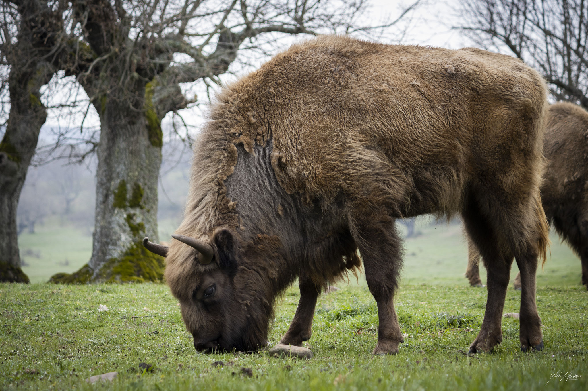
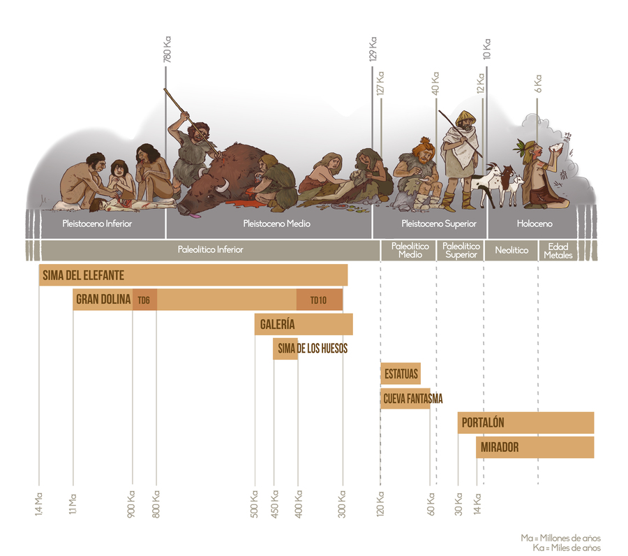
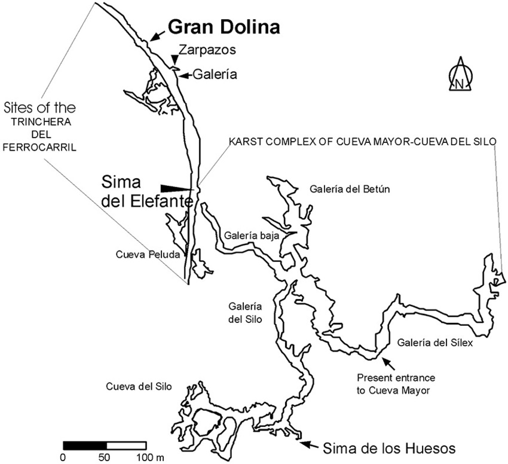

14:00 – 17:00 h 🍽️ 💃 Comida con EIA y ACAHIA - Ibeas de Juarros
17:30 – 19:30 h 🦬 Safari a pie en Paleolítico Vivo - C. Larga, 22, Salgüero de Juarros *15 Euros por persona

Bisontes de Paleolítico Vivo
🌙 Noche
21:30 h 🍽️ Cena BBQ en TABERNA ARLANZÓN - Plaza Gutemberg 1, Arlanzón
✅ Recomendaciones
Calzado cómodo para los yacimientos
Ropa ligera y protección solar
Ropa de abrigo para las noches
Libreta y cámara para documentar
Prismáticos
Puntualidad en los traslados
🗓️ 📁 ✅ Organiza:
IAM - Instituto de Arqueología de Mérida (CSIC - Junta de Extremadura)
Con colaboración de IPHES, CENIEH, MEH y el Equipo de Investigación de Atapuerca EIA

Línea del tiempo de Atapuerca y principales hallazgos

Fotografía aérea del karst de Cueva Mayor y Trinchera